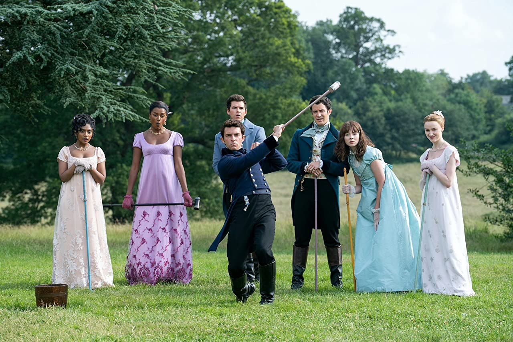
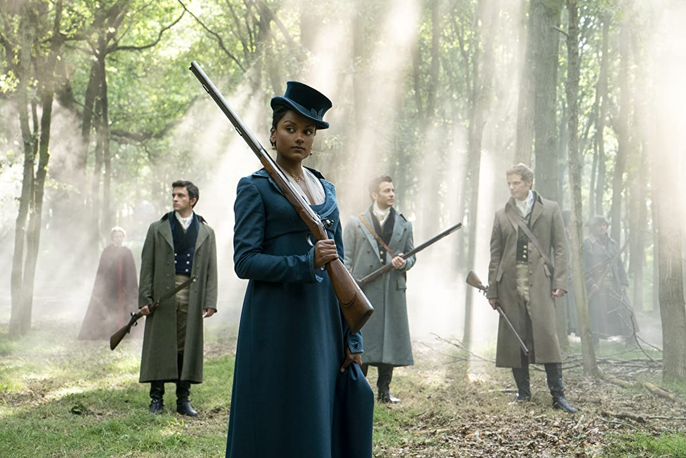
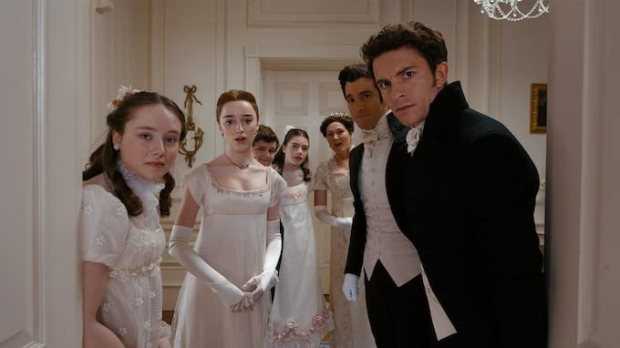
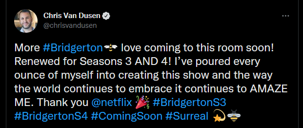

- Starring
- Johnathon Bailey
- Ruth Gemmel
- Polly Walker
Oh, dear readers [in the words of Lady Whistledown] what have we come to? After waiting, what seems to be a lifetime for the commencement of season two of Bridgerton, I’m here to tell you it wasn’t worth the wait. More bodice ripping the adverts screamed. I was looking forward to that. The first series was renowned for its sex scenes. However, there is not one bodice ripped in the entire 8-hour presentation. We must wait seven hours for any suggestion of lovemaking and then it is all shot in shadows and gloom. And we don’t care a fig for the characters performing it.
Now, let us put this into perspective. The first season of Bridgerton was fresh, sexy, and entertaining. What on earth happened in the intervening period?
Well, I can tell you what happened! The duke, played by Rege-Jean Page, has left the cast. It becomes apparent, very soon, after the commencement of the second series, that a great deal is lacking. And it is all down to this actor’s absence. All the charisma has left the series. He lit every scene he appeared in in the first season. And Phoebe Dynevor was splendid as his protagonist. In this season, she is a shadow of what she was. Admittedly, she is not asked to do much. Obviously, her Duke inspired her and carried the whole of season one.
 Phoebe spends way too much time on the periphery, while Johnny attempts the leading roleSo, what do we have in season 2? A lack-lustre television series of 8 episodes, which if you blink, or fall asleep, as some of you will, you won’t miss anything. The leading man and oldest son of the Bridgerton clan is played, once again, by Johnny Bailey. Now he was splendid in the first series, he was free to roam through all sorts of fights and pursuits and affairs, particularly, with the opera singer. His first entrance was a bare backside up against a tree doing something to one of his women. [Dear Reader, I can’t think what it was!] He was a swashbuckler of the old order and the audience loved him. But now, when he has the lead role he fails. He’s hampered all along the way. I like him, I’ve seen him do some very good work, but this is not his forte. Perhaps, he just isn’t a leading man. He seems hampered throughout, as do, most of the cast.
His two love interests, in this one, are very, very lack lustre. There is no charisma, no spark, from either of them. They walk through the piece as if they don’t belong there. The writers should have allowed Johnny to have a girl on the side as well as making him pursue, not one, but both these girls, Simone Ashley and Charithra Chandron. [I don’t think we’ll be seeing much of them in the future.]
 Maybe acting isn't her forte? But if this was a hip hop album cover, you know it would be 🔥The rest of the cast, and in fact the story line, are weighted down as if loaded with lead. Lady Danbry, is so overbearing it is an embarrassment, as is the Queen. Although there is a nice vignette from James Fleet as the ailing King George the third.
Those excellent actresses, Ruth Gemmel and Polly Walker, who have done splendid work on the screen over the years, and committed themselves well in the first series, have been reduced to pulling faces and muttering asides. I felt sorry for them. They even looked embarrassed.
And did we have to live through the father dying of the bee sting, once again? We had it in series one. [Also, the father doesn’t look any older than Johnny Bayley, his son.]
 Ever have that dream where you go to school with no pants on?And it is starting to look ridiculous. Flowers, flowers, everywhere. [I was reminded of a poem, Roses, Roses, Everywhere.] The signature to the show is flowers, but when in such abundance it becomes tiresome. Would England really have such a supply of cultured blooms in the Regency period?
It’s adapted from the second Bridgerton novel ‘The Viscount who loved me’. The book is much better. The highlight is the game of a type of croquet, or Pall-Mall which is the centre piece of the novel. But not here, it just becomes a silly piece of one-up-man-ship. It’s also should set sparks flying between the two lovers, but it doesn’t.
To sum up, great expectations were had by this viewer, but I feel completely let down.
Star Rating: 1/5 [Hopefully, they won’t make another series.] [Hopefully, they won’t make another series.]
 Shhhh... no one tell the Grumpy Old Man